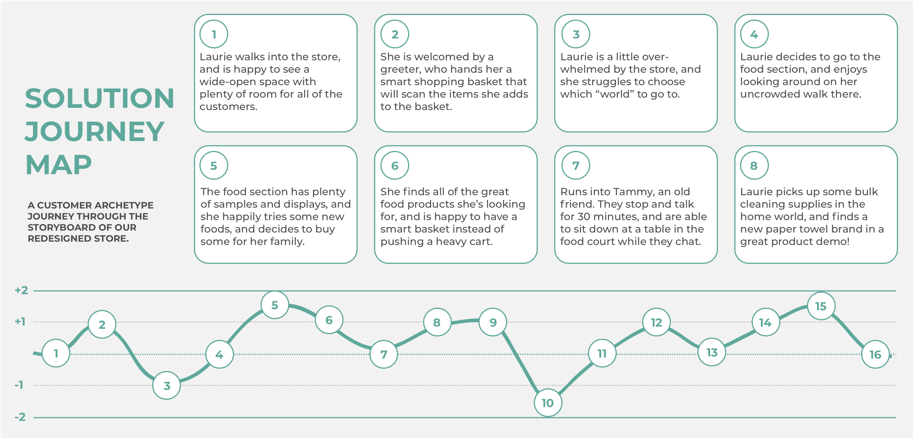

project objective
The objective for this project was to design a change in the Costco store that would create an ideal end-to-end shopping experience resulting in delight for the existing customer segment.

Reimagining the Costco store to create the ideal end-to-end experience for customers.
Customer Interviews, Problem-Need Identification, Storyboarding, Solution Development, Prototyping
Project Management, Mind-Mapping, User Research, Experience Design, Prototyping, Concept Presentation
Adobe Illustrator, InDesign, Google Suite
The objective for this project was to design a change in the Costco store that would create an ideal end-to-end shopping experience resulting in delight for the existing customer segment.
My team and I kicked off the project with several field trips to our local Costco store. We wrote down observations, took pictures of the environment, and interviewed shoppers about their experiences.
Based off of the interviews we conducted and our observations at the store, we mapped out the existing journey that a typical customer in the target segment experienced when shopping at Costco. We used that journey map to identify the key pain points in the experience, which we then used as a basis for developing our solution.
After weeks of research, interviews, and problem/need identification, my team and I began brainstorming concepts for different solutions. We then organized our ideas through mind-mapping to help visualize patterns and categories in the data.
We created three solid solution concepts, then used our mind-map and journey map to help identify which solution best addressed customer problems and desires. Once we selected a concept to move forward with, we began expanding the idea through additional brainstorming and mapping.

My team and I created a detailed storyboard and journey map for our solution to showcase how our new design positively impacted the shopping experience for the customer.
I created a rough prototype of our design in order to help present our concept and convey how the functionality created an experience. I created a digital interface mockup, as well as physical cardboard models of the smart basket and product representations.
My team and I presented our process and solution, along with a demo of our prototype. Five other teams had been assigned to work on the same problem, and it was determined that my group had developed the highest-quality, most user-focused experience. As a result of my work on this project, I was selected for the opportunity to work for the Cal Poly Center for Innovation & Entrepreneurship.